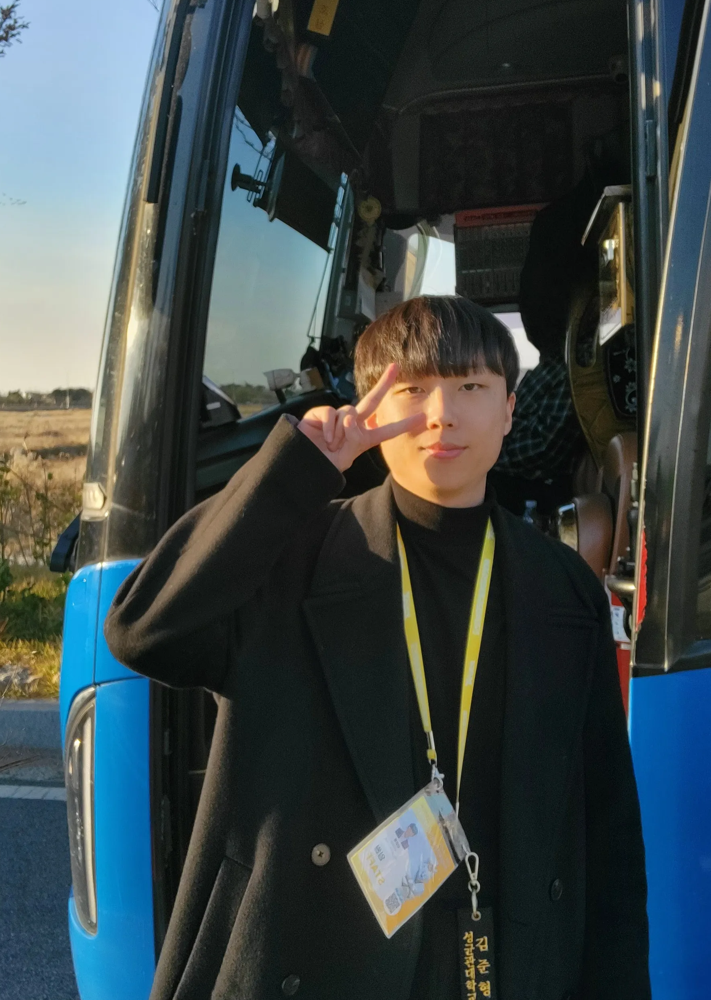

Video Understanding
Learning meaningful representations from complex temporal and visual signals.
Open to research collaborations
I'm Junhyung Kim, an undergraduate researcher exploring video understanding and multimodal fusion.
I study Applied Artificial Intelligence at Sungkyunkwan University and work as a research intern at the VIP Lab, Seoul National University, advised by Prof. Joonseok Lee.
Presidential Science Scholar. Always glad to talk about research, ambitious ideas, and thoughtful collaborations.

Seoul, South Korea01 / Research
My work focuses on building robust, interpretable AI systems that connect visual and language signals.
Learning meaningful representations from complex temporal and visual signals.
Combining complementary modalities for reliable and context-aware intelligence.
Designing systems whose decisions remain dependable and understandable.
02 / Experience
Working across vision, language, and human behavior.
Seoul National University
Conducting research on video understanding and multimodal fusion.
Sungkyunkwan University
Conducted research on large language models and multimodal fusion.
Sungkyunkwan University
Conducted research on predictive modeling using natural language processing.
03 / Publications
Work spanning emotional support, autonomous driving, financial forecasting, and social computing.
Preprint 2026
Preprint 2026 · Code ↗
Preprint 2025
ITPR 2025
* Equal contribution. † Corresponding author.
04 / Recognition
College of Computing and Informatics, Sungkyunkwan University
Recognized for outstanding academic performance and ranked in the top 1% in Fall 2025.
Center for Innovative Higher Education, Sungkyunkwan University
Authored a paper on a reliability-aware LiDAR–Camera BEV fusion module · Co-Deep Learning Project
Korean Regional Science Association
Authored a paper on residents' perception differences under social mix housing allocation strategies · Fall Conference of KRSA
Korea University AI Academic Society
Development of a video summarization model using a Global-to-Local and Local-to-Global attention ensemble · Datathon of the National Center of Excellence in Software, Korea University
College of Education, Sungkyunkwan University
Development of a high-fidelity tax advisory AI system · 5th Sungkyunkwan University AI Hackathon
Korea Energy Agency
Development of a power consumption forecasting AI model · Power Consumption Forecasting AI Competition · Code ↗
Institute for Information & Communications Technology Planning & Evaluation
Development of an AI model to detect LLM-generated text. Winner of the Popularity Award · SW-Centered University Digital Competition: AI Sector · Code ↗
DB Kim Jun Ki Cultural Foundation
Authored a paper applying sentiment analysis to bond investment behavior · 15th DB Insurance & Finance Contest
Korea Intellectual Property Office
Designed an AI-based system for mitigating acoustic noise in naval propulsion and maneuvering · National Defense Conundrum Solution Idea Competition
4 of 9 honors shown
05 / Scholarship
President of the Republic of Korea
One of 60 nationally selected science and engineering students awarded full tuition and research funding.
College of Computing and Informatics, Sungkyunkwan University
Achieved a 4.50/4.50 GPA for 17 Credits.
Sungkyunkwan University
Granted in recognition of leadership, initiative, and student engagement.
Sungkyunkwan University
Awarded for 4 consecutive semesters based on outstanding academic achievement at admission.
1 of 4 scholarships shown